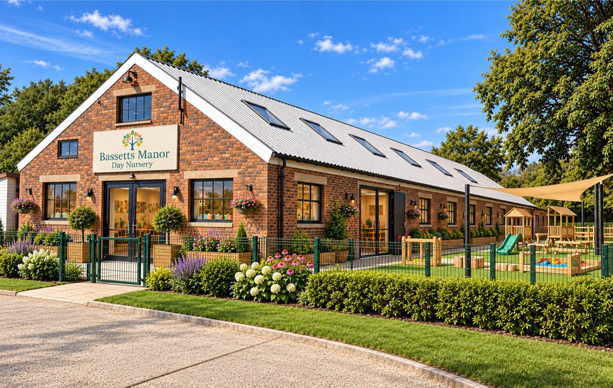

Bassetts Manor / Hartfield, East Sussex
Bassetts Manor
Countryside Day Nursery
A premium early-years opportunity in the Kent-Sussex countryside, combining purpose-designed accommodation, secure outdoor play and a distinctive rural learning environment.
Operator Introduction | October 2026
01 / The market opportunity
A nursery worth travelling for
Bassetts Manor is positioned to serve Hartfield and the surrounding villages, with a wider market extending towards Forest Row, East Grinstead, Crowborough, Edenbridge and Tunbridge Wells.
Differentiated positioning
Outdoor learning, woodland activities, growing spaces and supervised farm experiences could distinguish the nursery from urban competitors.
Key demand drivers
- Established commuter and professional households in surrounding towns.
- Potential childcare capacity pressure identified in nearby Forest Row.
- Funded childcare entitlement supports eligible working families.
02 / The manor house
The Manor House
An established country estate setting
The proposed nursery occupies a separate building within the wider estate.
03 / Demographics & catchment
Demographics & catchment
Gross disposable household income per head (ONS figures cited)
Regional market, local convenience
Tunbridge Wells Borough recorded around 115,300 residents at the 2021 Census. Hartfield Parish recorded around 2,251. These are administrative populations, not the number of nursery customers.
Evidence of childcare opportunity
East Sussex County Council's 2026 childcare sufficiency assessment identified potential insufficient early-years capacity in Forest Row. This supports further investigation, but does not establish unmet demand at the site itself or guarantee nursery occupancy.
What an operator should test
A 15- and 20-minute drive-time analysis of children aged 0-4; existing nursery places, fees and waiting lists; travel routes and parking; and a capacity-led operating appraisal with staffing and funding assumptions.
The opportunity is a premium rural proposition, not a claim that the entire population of the surrounding towns is within easy reach.
04 / Site & operator proposition
A tailored setting within a rural destination
The illustrative plan identifies approximately 0.343 acres (1,389 sq m) for the nursery allocation. Internal floor area, age-group mix, registered capacity and final outdoor provision remain subject to operator design.
05 / Existing site & layout
Existing site & layout
Current nursery allocation and existing building layout
Operator Introduction | November 2026
06 / Proposed first floor
Proposed first floor
Indicative first-floor accommodation
Operator Introduction | November 2026
07 / Rear elevation & external space
Rear elevation & external space
Bassetts Manor Day Nursery – illustrative CGI
Operator Introduction | November 2026
08 / The Bassetts Manor Estate
The Bassetts Manor Estate
Landscaped countryside, paddocks and traditional estate character
09 / Estate Context
Estate Context
Estate plan showing the wider rural setting; not a nursery demise plan
10 / Invitation to operators
Invitation to operators
We welcome initial discussions on capacity, layout, secure play space, drop-off arrangements and the terms of a long-term nursery lease.
Sources: ONS Census 2021; ONS GDHI; ESCC Childcare Sufficiency 2026; DfE childcare entitlement guidance. Concept images are illustrative.